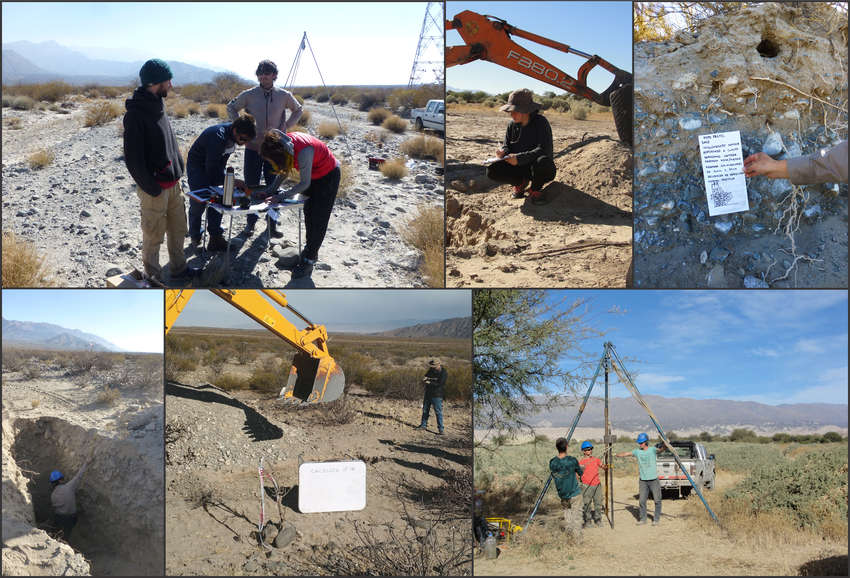

En el Valle de Santa María de la provincia de Catamarca, en sociedad con la empresa Geoserrana, realizamos un estudio geológico y geotécnico para un proyecto de Energías Renovables No Convencionales (ERNC), con tecnología de paneles fotovoltaicos para la captación de la energía solar en una superficie de aproximadamente 400 Has. Este trabajo fue principalmente de campo y de laboratorio, las tareas que lo integraron son:
- Análisis de laboratorio a muestras representativas extraídas a diferentes profundidades
- Curvas granulométricas
- Análisis físico-químicos
- Determinación de porcentaje humedad
